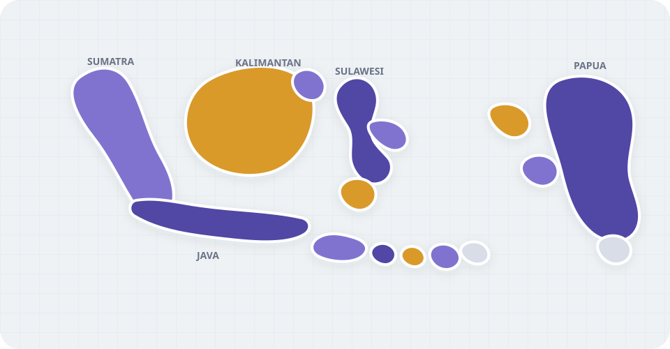

Available now · about 2 minutes
Highlight regions
Choose provinces or cities, set their colors, and export a clean map.
Mapping for Indonesia
Highlight regions, upload a spreadsheet, build sales territories, or analyze coverage — no GIS skills required.
No account. No upload to a server. Start with a sample or your own file.

Choose an outcome
Pick a goal. NusaCanvas only shows the tools you need for that job.
Available now · about 2 minutes
Choose provinces or cities, set their colors, and export a clean map.
Available now · about 5 minutes
Paste or open a CSV, match region names, and turn values into a readable map.
Upcoming Planned for a future release
Group regions into balanced, named territories for planning and presentation.
Upcoming Planned for a future release
Compare coverage across regions and find gaps without leaving the map.
Useful starting points
Example
See how spreadsheet rows stay linked to map regions.
Guide
A short checklist for clean, matchable Indonesia data.
Region data
Understand the boundary release behind each exported map.